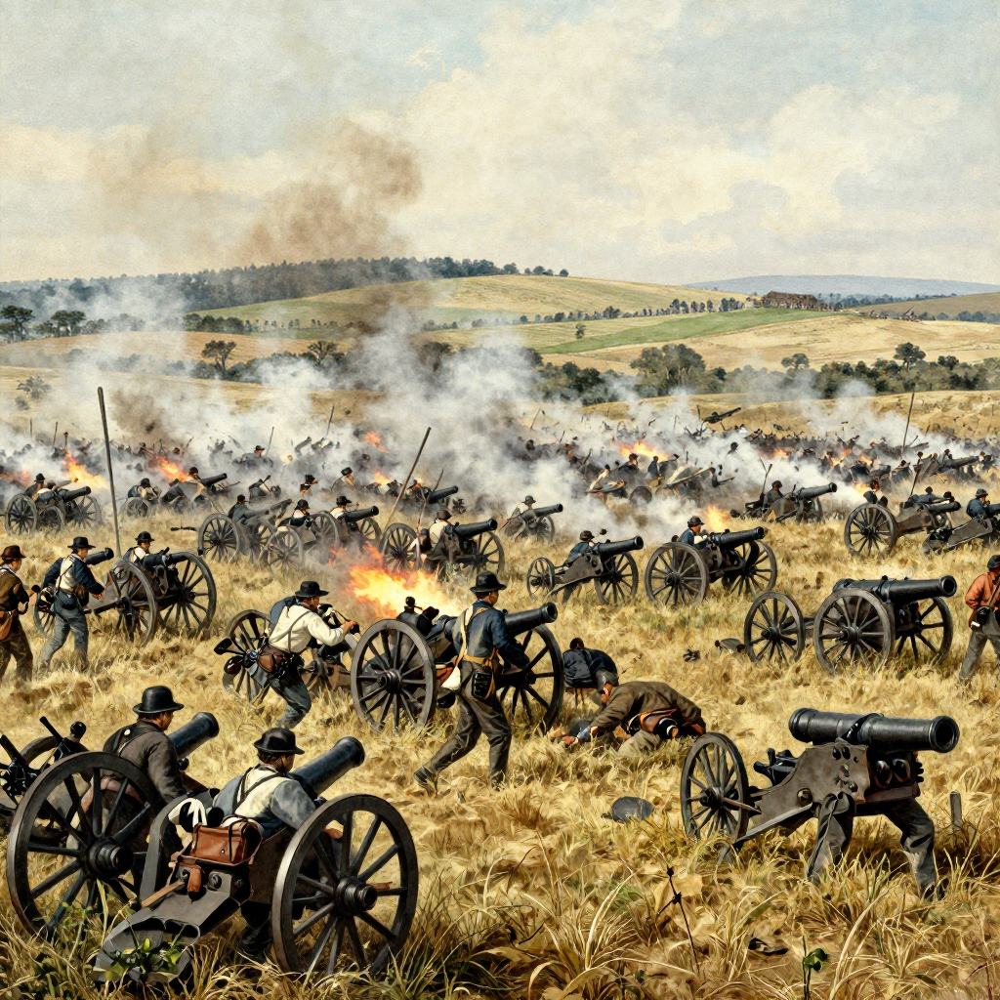
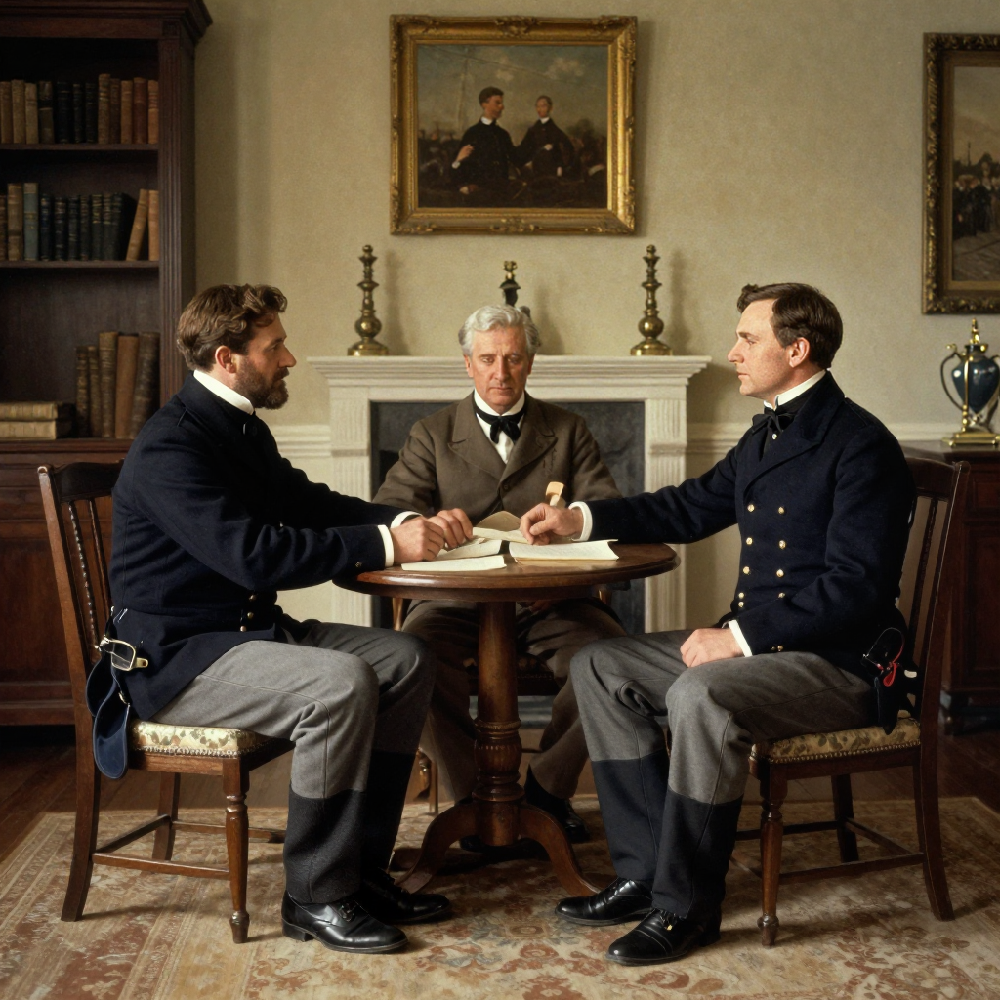

Wilmer McLean: The Man Who Couldn't Escape the Civil War

The McLean house at Appomattox Court House, where General Lee surrendered to General Grant on April 9, 1865.
Sometimes truth really is stranger than fiction. Wilmer McLean was an ordinary Virginia grocer who just wanted to stay out of the Civil War. Instead, through one of history's most bizarre coincidences, the war began in his front yard and ended in his front parlor.
The War Comes to Manassas
In 1861, Wilmer McLean was living a peaceful life on his Yorkshire plantation near Manassas, Virginia. He was 46 years old, too old to enlist, but he supported the Confederate cause. That summer, his peaceful farm became the center of the Civil War's first major battle.
Confederate General P.G.T. Beauregard used McLean's farmhouse as his headquarters during the First Battle of Bull Run on July 21, 1861. Union artillery shelled the property, and a cannonball famously crashed through McLean's kitchen chimney while his family was eating breakfast.

The First Battle of Bull Run was fought partly on McLean's Manassas farm in July 1861.
💥 Too Close for Comfort
A cannonball literally fell into McLean's fireplace while his family was eating breakfast. That's when he decided it was time to move!
Seeking Safety in Appomattox
Determined to protect his family from the war, McLean moved them about 100 miles southwest to a small village called Appomattox Court House. He figured the war would never reach this quiet corner of Virginia. He was spectacularly wrong.
📅 Four Years Later
McLean moved his family in 1863. Just two years later, the war would find him again - this time for its dramatic conclusion.
The War Ends Where It Began
On April 9, 1865, Confederate General Robert E. Lee was surrounded near Appomattox. He needed a place to meet Union General Ulysses S. Grant to discuss surrender. Someone suggested Wilmer McLean's house.

Lee and Grant in the McLean parlor on April 9, 1865, ending four years of bloody conflict.
McLean later famously remarked: "The war began in my front yard and ended in my front parlor." It's one of history's most perfect coincidences - the same man's property witnessed both the first major battle and the final surrender of the American Civil War.
🏠 Souvenir Hunters
After the surrender, Union officers bought or took almost everything in McLean's house as souvenirs. They even paid him for the table where Grant and Lee sat!
Aftermath and Legacy
The irony wasn't lost on historians. McLean tried everything to escape the war, moving his family over 100 miles away, only to have the most important moment of the conflict happen in his living room.
💸 Financial Ruin
Despite the historical significance of his properties, McLean died in debt in 1882. His Appomattox house was later dismantled and moved, and his Manassas farm was lost to time.
Today, the Appomattox Court House National Historical Park includes a reconstruction of the McLean house, preserving this remarkable coincidence for future generations. Wilmer McLean's story reminds us that sometimes ordinary people find themselves at the center of extraordinary historical events through no choice of their own.